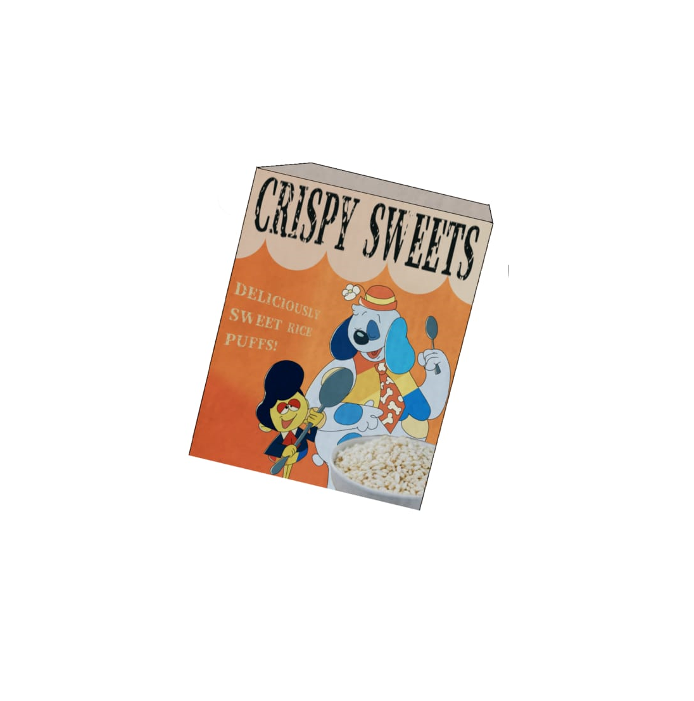

Buckle up for a breakfast experience that's rewriting the rules of morning munchies!
That's right! We're reintroduce you our new Crispy Sweets!

A taste sensation that's set to transport you through time and flavor. Imagine awakening to a bowl that's not just a meal, but a portal to an era where vibrant memories and carefree moments reign supreme. With every spoonful, you're diving headfirst into a symphony of flavors that pay homage to the past, evoking a sense of familiarity and pure delight. Gather your loved ones, whether it's your kin or your crew of pals, and let Rice Puff Cereal become the centerpiece of shared joy, where stories flow as freely as the playful crunch of each puff. It's a breakfast table revolution that's more than just a feast – it's a catalyst for connection, a chance to strengthen bonds and create new memories that'll last a lifetime. Feel the satisfying texture as you embark on a culinary journey that's as much about nostalgia as it is about nourishment. With Rice Puff Cereal, breakfast becomes more than a routine; it's a daily celebration of life's simple pleasures, a reminder of the enduring quality that transcends generations. Don't limit your enjoyment to the morning – Rice Puff Cereal is your versatile snack companion, ready to add a touch of retro joy to every moment. By embracing Rice Puff Cereal, you're not just savoring breakfast; you're immersing yourself in a flavorful time capsule that seamlessly bridges the past and present. So gear up for a crunch-filled voyage of taste, a symphony of memories, and a transformation of your breakfast routine into a daily epic. Get ready to crunch, share, and experience the magic of Rice Puff Cereal – a culinary masterpiece that's rewriting the story of breakfast, one sensational bite at a time.